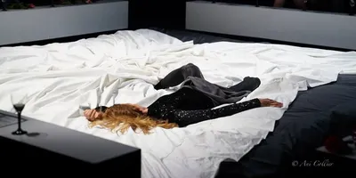
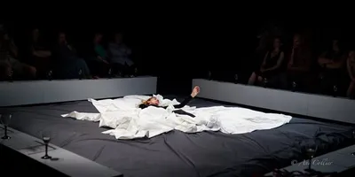
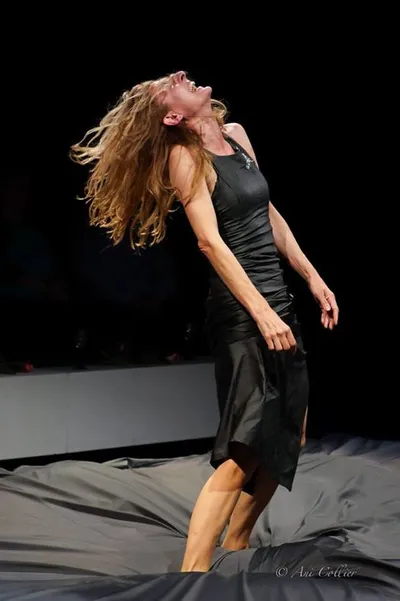
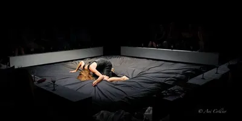

Тук долу всички люляци умират
Струва ми се тук бих могла да спра
“Идеите са наследници на тъгата, когато тъгата се превърне в идея, тя вече няма силата да наранява сърцето.” Марсел Пруст
“Бих могла да ви кажа какво съм изследвала, ако не бях чела Марсел Пруст и не бях oбсебена от музиката на Рихард Вагнер и Ленард Коен. Сега се чувствам толкова несигурно танцуваща, че несигурността ми принадлежи на един друг свят. Бих могла да ви кажа какво съм изследвала, ако знаех. Но тъй като всичките ми предположения могат да бъдат оспорвани, няма да ви напрягам с обяснения дали “обектът се връща от дълъг път през тясната рамка на половинчато отворена врата, безкрайно отдалечен, в цвят съвсем различен, кадифен, със сияние на някаква намеса на светлина, или се появява, танцува, но принадлежи към един друг свят”.
Бих искала да говоря за любовта, ако знаех и бих могла да я опиша. Бих искала да зная повече за смъртта, която често ни тормози поради несигурността си да се случи в идеалния за нас вариант. Няма да мога да ви кажа и какво е за мен тъгата, тъй като съм я изоставила дотам, че да не ми се мярка повече пред очите, и не допускам за дълго да се завръща. Бих могла да кажа и какво е за мен изкуството, въпреки че, не е скромно да изказвам преценката си за което и да е произведение.”
Галина Борисова



